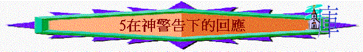

經文：摩7
引言(7:9)
～神對阿摩司預言什麼事情？ 神要對以色列將作什麼事？
進行刑罰要審判～若今天有真的先知對你講及將來神會審判你的消息，向你發出警告，正常來說，你會有什麼回應？
～摩7是神向人發出了警告，另先知阿摩司及祭司亞瑪謝作出不同的回應，究竟神有什麼警告及人有什麼不同的回應，我們今天嘗試從摩7中，看一看
一.先知的回應(7:1-9)
1.7:1-2神對阿摩司有什麼指示？ 猜想為王割菜是什麼意思？ 這指示表達神可以向選民發出什麼懲罰？ 你認為此懲罰如何（慘不慘）？
以前以色列首批收成納入王庫，作為人民的稅項，但當第二造農作物剛成之際，神要用蝗蟲滅地上的青草
2.7:2先知第一時間有什麼回應? 他的理據何在？為百姓祈求，求神赦免，因以色列微弱，不能承受此嚴重的災禍
3.7:3神又有什麼回應？ 這災可以免了
4.7:4神對阿摩司又有什麼指示？ 神要用火懲罰以色列人
5. 7:5先知又有什麼回應? 他的理據何在？ 「求祢止息」(please stop)先知是有真理知識的人，他知道人算甚麼，怎能攔阻神的作為，但他為了同胞，仍突破常理，勇敢的向神提出，請祂停止此審判行動 因以色列微弱，不能承受此嚴重的災禍
6.7:6神又有什麼回應？ 這災也可免了
7.從阿摩司及神的回應中，我們可學到什麼真理？
8.有沒有經歷過一些朋友或親人或肢體得罪了神後，你為他向神發出求神憐憫及赦免的祈求？ 試分享
9.7:7-9對阿摩司又有什麼指示？ 有牆及主手拿準繩的異象，神也要攻擊以色列 準繩是什麼？ 在建築中有什麼作用？ 神在審判中，量度了什麼地方作為審判之地？ 邱壇指什麼及有什麼不妥之處（可參創26:23-25及王下 17:29）？ 準繩即鉛垂線，用作測度建築物是否垂直的，神要用準繩量度以色列人受審判的地方H撒的邱壇(可能指別是巴，因以撒曾在那裡建壇，日後他們也在那裡敬拜偶像)、聖所、耶羅波安家。而準繩也代表神將地量一量，分給外邦人，另外，也可代表神的審判是公正、合理的。
10.先知今次有沒有向神發出之前的請求？ 為什麼不發出？ 我們又可學習什麼真理？
這次先知沒有再求，因為神說「我必不再寬恕他們」，神已說明這重要原則(是必，及不會再赦免)，先知只能順服神最終決定(之前2次神也沒此說明)，先知見到準繩，可能也明白神的審判是正確的，而下文也加插帶領不順服的表現，先知雖對同胞有愛心，但他仍有真理立場，知道他們的審判被擊倒是應該的、合真理的。
二.「祭司」的回應(7:10-17)
1.7:10又發生了什麼事？ 亞瑪謝是誰？ 正常祭司在耶路撒冷，他是在那處作祭司？ 何解（可參王上12:32-33）? 「伯特利的祭司亞瑪謝」他是北國以色列在伯特利敬拜中心的宗教領袖，但他卻不屬利未人，而是王委任的
2. 亞瑪謝向王說了什麼話？ 他為何說阿摩司圖謀背叛王？ 反映他對神的話存什麼態度？ 亞瑪謝對阿摩司的說話不認同，因為他講了一些人不喜歡聽的說話a領被殺、人民被擄，在以色列地也有假先知，他們說平安的說話受人歡迎，但說一些影響士氣及國家的惡言，他們覺得說這些話的人是叛國。
3.7:12-13亞瑪謝又對阿摩司說了什麼事？ 他認為阿摩司應在那裡作工？ 在猶大地 他對阿摩司有什麼囑咐？ 不要在伯特利說預言（北面） 理由何在？ 因伯特利有王的聖所及宮殿，先知所說的是侵犯住在宮殿的王 你認為合理嗎？
4.7:14-15阿摩司又怎樣回應？ 他怎樣介紹自己及自己的職任？ 他是神所選在以色列說預言（不單是猶大地） 有沒有回應亞瑪謝7:12-13的言語？
5.從以上經文我們可看到亞瑪謝在對神的僕人、神的工作、神的言語上有什麼不妥之處？
藐視神的僕人：阿摩司是神揀選的，是神的僕人，代表神向北國說預言，但亞瑪謝卻無理控告先知，公然藐視神所差的人
禁止神的工作：祭司趕先知離開北國地，返回猶大地去，但先知的工作是在北國，人卻嘗試禁止神所吩咐人的工作。
不信神的話語：明顯不信神會有審判，若信，該當有聆聽受教及回轉的心，但亞瑪謝卻沒有。
6.有沒有見過一些人對神的僕人／說話有藐視的態度或表現？ 試分享
7.7:16-17又說了什麼事？ 先知在7:16指出亞瑪謝有什麼問題？ 他禁止神的僕人在北面說神的警告之預言
8.最終亞瑪謝及以色列人得著什麼刑罰 ? 妻子足飢略k、兒子辿b刀下、地土Q人奪去、自己漲b穢地、選民眾Q擄去
總結:
阿摩司及亞瑪謝對神的警告之回應有什麼不同地方？
今天查經對你有什麼提醒與得著?
祈禱